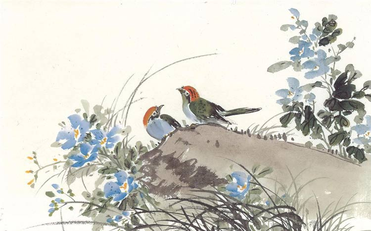

如果现在让你形容一下寒冷的冬天，你脑子里肯定瞬间闪过数不清的词汇：刺骨、严寒、惨烈、冰冻……那么整个冬天，哪段时间是最冷的呢？快搬好小板凳，小编给你上课啦！从冬至那一天开始数九，之后每九天为一个单位，从九九歌就能看出来这期间大致的温度情况。九九歌有许多个版本，这是流传度最广的一个：“一九二九不出手，三九四九冰（dong）上（si）走（gou），五九六九沿河看柳，七九河开，八九燕来，九九加一九，耕牛遍地走”。
九九歌中各个阶段对应的日期是这样的：一九：12月22日~12月30日，二九：12月31日~次年1月8日，三九：1月9日~1月17日，四九：1月18日~1月26日，五九：1月27日~2月4日（剩下的自己算，加9不会啊！）……各位缺乏节气知识的大朋友、小朋友们，参照以上时间表，恭喜你们已经熬过了最冷的阶段——三九四九。
已经过去的那段时间，怎么回忆都是泪——穿上美美的裙子出去约会，瞬间嘴唇变紫；秋裤穿了一层又一层，腿粗了一圈又一圈，风还是惨淡的透了进来；挂在天边的不是太阳，那是冰箱里的灯好吗？！不过还好，现在的我们已经踏上了温暖的“五九”之路，脱秋裤的日子不远了！
九九歌巧妙的利用自然界的物候现象，生动的反映了整个九九过程中天气的变化规律。绝大多数地区二九过完时，天气还没达到冷的极致，一九二九才只到了“伸不出手”的程度。而四九过完时已基本到了大寒节气，所以说三九四九才是寒冷时节的“大BOSS”，要不怎么说冻死狗呢。到了五九以后，大地回春、天气由冷渐暖，差不多可以沿河看柳了，而现在我们就处于这个阶段我会乱讲？！
明代出现了“画九”的习俗。所谓的画，实则是冬至后计算春暖日期的图。明代《帝京景物略》载：“冬至日，画素梅一枝，为瓣八十有一。日染一瓣，瓣尽而九九出，则春深矣，曰九九消寒图”。此外，清代还有“九九消寒诗图”，图中每九天四句，共三十六句，内容从远古时代的“三皇治世”到本朝代的“大清坐金銮”，称得上是一部富有雅趣的历史“大事记”。
继画九后，清代又出现了写九的习俗。“写九”的文化味也是很浓的，往往用“亭前垂柳珍重待春风”或“春前庭柏风送香盈室”九字先双钩成幅，从头九第一天开始填写。用粗毛笔着黑色，每字九笔、每笔一天，九字填完正好八十一天。有意思的是，每天填完一笔后，还要用细毛笔着白色在笔画上记录当日天气情况，所以，一行“写九”字幅，也是九九天里较详细的气象资料。
1、从冬至熬到现在，最冷的时候已经度过，现在开始静静等待春天的到来；
2、标题只是一种手法你懂得，脱秋裤这件事还得从长计议！